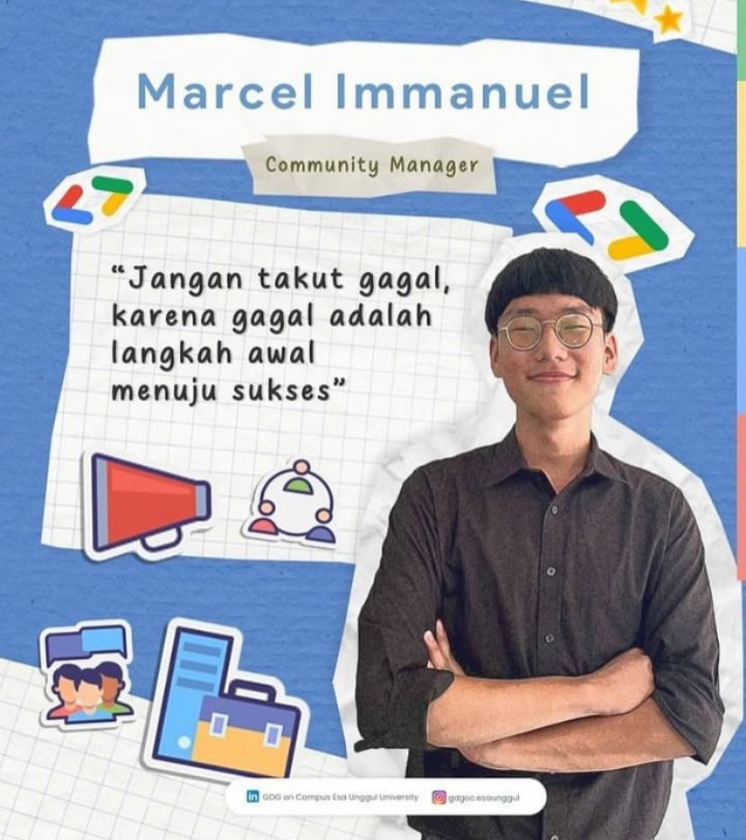

Profile
I am a 1st-semester Computer Science student at Esa Unggul University. Currently, I am actively involved in various campus organizations, one of which is GDGOC, to deepen my knowledge in the field of technology. I believe that by continuously growing through organizational experiences and learning, I can build a strong foundation for a career in the rapidly evolving technology sector.

Complete Bio
| Full Name | Marcel Immanuel |
|---|---|
| Date of Birth | December 31, 2005 |
| Latest Education | Vocational High School |
| Hobby | Listen to music |